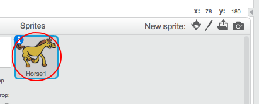
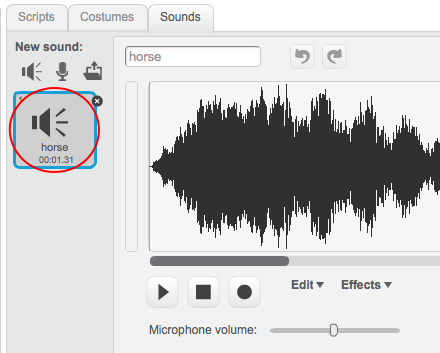

Select the sprite you want to add the sound to.

Click the Sounds tab, and click Choose sound from library:

Sounds are organised by category, and you can click the Play button to hear a sound. Choose a suitable sound and click OK.

You should then see that your sprite has your chosen sound.
